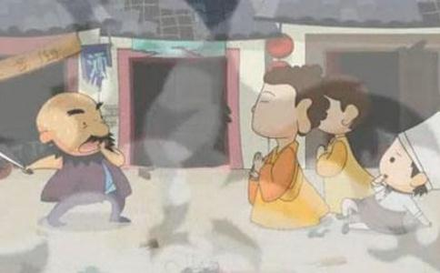

有一个朋友对一个源于佛教界的成语颇有微词。是哪句呢？放下屠刀，立地成佛。他认为一个人只要放下屠刀，就立地成佛了。那他以前杀过人，就无须受惩罚了吗？如果是这样，那对他所杀戮的生灵岂不是太公平了？这哪里能体现佛教所宣扬的什么因果报应呢？
从某种层面上来说，朋友质疑的非常有道理。但是如果他愿意探究一下，又可以逐渐打消这个疑问。首先让我们来了解一下“放下屠刀 立地成佛”这个成语的来源。它出自佛经《涅般经梵行品》：“波罗亻奈国有屠儿名日广额，于日日中杀无数羊，见舍利弗，即受八戒，经一日一夜，以是因缘，命终得为北方天王毗沙门之子。”文中的舍利弗是释迦牟尼佛的大弟子，号称“智慧第一”。“八戒”是佛教中的戒律，包括不杀生不偷盗不邪淫不妄语不饮酒等。第一戒就是不杀生，因为佛教认为杀生是属于应受地狱报应的是最大恶业之一。放下屠刀就是不杀生，亦泛指不造一切恶业，而不造一切恶业，就能得到种种福报，进而摆脱轮回，直至成佛。
文中的广额因为没有受过佛法教育，所以以屠羊为业，杀羊牟利以谋生，然而当他遇到舍利弗，听闻教化之后，马上就意识到自己的罪过，当下就忏悔前愆，发愿改恶从善，受持“八戒”，这样的人能对佛法闻即信受，如教奉行，实属难能可贵。试想想，如果放在现在，有几人肯承认杀生养命的职业是罪恶的？他会辩解“我不这样我怎么生存？”、“在这个世界上，又不是我一个人在杀羊！”总之振振有词，理直气壮。
还有的人即使认为杀羊是很残忍，但如果不杀羊，生计无法保障，事关自己的切身利益，所以也难以做到立刻放下屠刀，只能答应以后有合适的机会再来改变职业。
《陀罗尼经》中有这样一句话：世间有二人甚为难得，如优昙花，难可值遇，一者从不行恶法，二者有罪即能忏悔。这里的“忏悔”不仅仅是停留在口头上，说说“我有错，下不为例”之类的话语，而是永不复造，勇猛精进地改恶修善。而一个人如果不是真正地懂得、接受佛的教化，他可能在放下屠刀不久，又拿起屠刀，再次干起伤害生灵的勾当，这哪里是真正的“放下屠刀”呢？
还有“立地成佛”这句话，我们一般人都以为成佛就是到了极乐世界，永离凡尘，无复生死苦恼之患，但受微妙奇丽，清凉庄严之乐，或者是应化人间，利用广大神通、无边法力救苦救难，享受无数人的崇仰与膜拜。在我浅显地涉猎了一些佛教典籍之后，才发现我们对佛存在着多么重大的误解。
一个人真正学佛，发愿成佛，想要前往极乐世界，其实并不是为了自己的享受，而是觉得自己智慧浅薄，容易受这个浊世的污染，做下恶业，堕入恶道，同时又觉得这个世界上的众生都在承受着无量无边的苦痛，无法出离，自己仅有悲悯之心，却没有智慧和能力帮助救度，为了自度度人，所以希望听闻极乐世界阿弥陀佛的教诲，储备足够的智慧资料，再来度化有缘众生。
另外，一个人成佛之后，并不是靠显示一下神通法力，高高在上地帮助一下众生，得到世人的香火膜拜就功德圆满了。其实成佛之后，度化众生，一点也不像我们凡人所想象的那般逍遥自在。看过《释迦牟尼佛传》，才知道释迦牟尼是因为看到众生在承受生老病死等无量痛苦，而放弃王宫中富贵无边、锦衣玉食的生活，苦行学道，穷究探索宇宙人生的真相，寻求了生脱死，摆脱种种痛苦的无上法门，在此期间，他承受许多常人难以承受的艰辛挫折。及至得道成佛之后，就和我们中国的圣人孔子一样，开始为众生传道授业解惑，说法不倦，达四十九年。树下一宿，日中一食，无论别人施舍什么，都甘之如饴地吃下。他教化世人，并不是靠法力神通，而是用契机契理的言传身教，真正让世人心悦诚服。
他在世做佛，也还是要偿还宿债。他的祖国是印度的迦毗罗卫国，当时出于某种原因，将一个女奴以国王女儿的名义嫁给邻国波斯匿王为妻，后来生下琉璃太子。琉璃太子在随母亲省亲迦毗罗卫国时，受到释迦王族的羞辱轻视。即位后为了报仇，发兵攻打迦毗罗卫国，前三次被释迦牟尼劝阻。第四次时，释迦牟尼知道共业果报不可避免，因此无法再行劝阻。这正是佛教教义所宣扬的佛陀也无法阻挡业力的流转，一切善恶到头终有报应。释迦牟尼早已了知琉璃太子不仅与释迦族今世有仇，这份仇恨更牵涉到宿世。
后来，琉璃太子带领的军队血洗迦毗罗卫国，释迦王族和无数百姓均遭到残忍杀戮，释迦牟尼也头痛三天，这当然是因为他的前世也曾伤害别人。
“历经千万劫，所作业不亡，因缘际会处，果报还自受”。我想，如果有人愿意阅读了解一下佛教的典藏，他对“放下屠刀 立地成佛”这个说法就没有任何怀疑了。
成佛并不是代表他脱离了六道轮回后，就可以无须为以前的罪业“买单”，就可以逍遥于因果大律之上，享受无边的清净和寂静，而是代表他到达了一种彻底无我的境界，神通广大法力无边，愿意将所有之一切施予众生，普渡众生，他的心胸博大至宇宙，盛满着慈悲、智慧、博爱、庄严、清净的能量，能给有缘众生带去无量祥和、幸福与安乐。
纵观我们，虽然大多数人都没有像广额那样直接拿起屠刀，以杀戮生灵来谋生，但是我们的心中难道没有一把屠刀，不是也时常起着自私自利、分别算计的念头，为着自己的吃喝玩乐，而肆意地伤害着别的生灵，掠夺着别的生命；为了钱财名利，坑蒙拐骗，虚伪狡诈，无所不用其极。这把屠刀在伤害别人的同时，其实也斩断了我们心中的善良和光明，让我们在罪恶之中沉陷，也让我们在黑暗之中沦落。
广额放下了屠刀，立地成佛了，我们是不是也要放下心中的屠刀，迷途知返，改邪归正，及早回头呢？